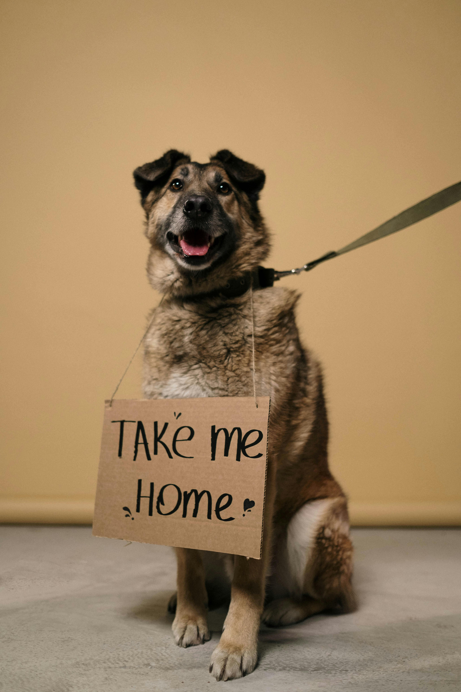
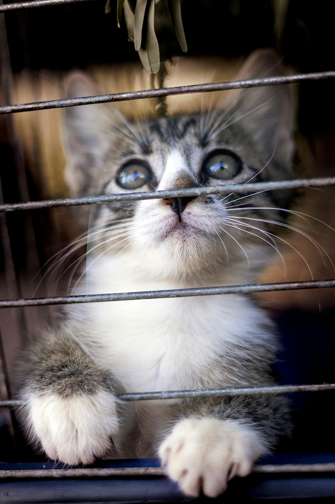
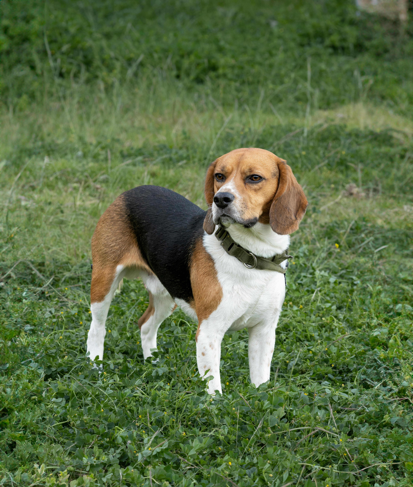
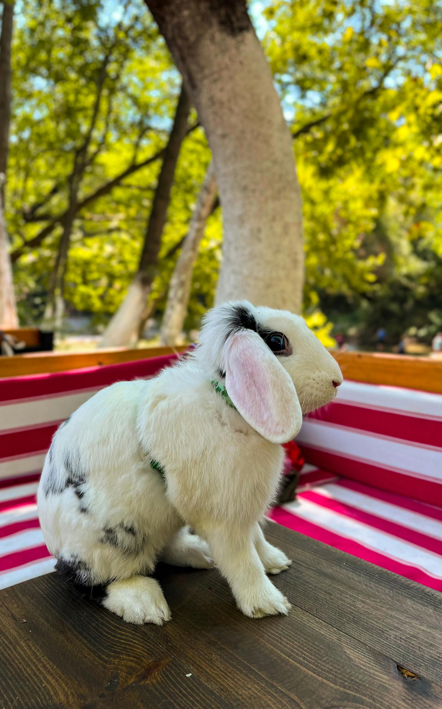

Adoptable Pets
Every animal at Pawsitive Rescue is looking for a loving forever home. Our adoption process helps match each pet with the right family based on personality, lifestyle, and care needs. Take a look at some of our wonderful adoptable pets below — your new best friend may be waiting for you.

Bailey
Breed: Labrador Retriever Mix
Age: 2 years old
Bailey is energetic, loyal, and always ready for adventure. She loves long walks, belly rubs, and spending time with people.

Milo
Breed: Domestic Short Hair
Age: 1 year old
Milo is playful and curious with a big personality. He enjoys sunny window spots, toys, and exploring his surroundings.

Daisy
Breed: Beagle
Age: 3 years old
Daisy is gentle, affectionate, and loves cuddles. She would make a wonderful companion for a calm and caring home.

Luna
Breed: Holland Lop Rabbit
Age: 10 months old
Luna is a sweet and social rabbit who enjoys attention and gentle care. She is ready to hop into a loving forever home.